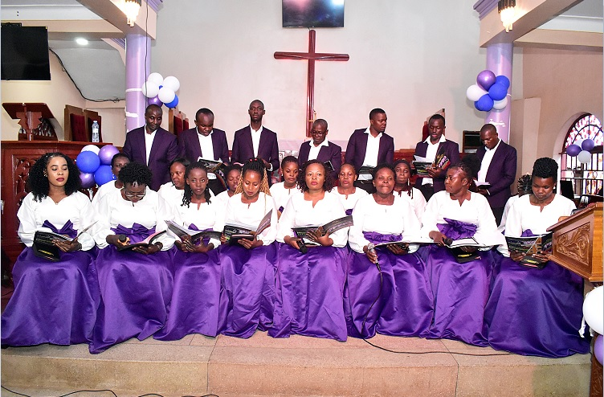
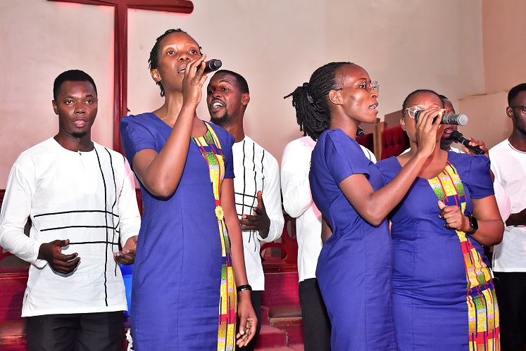
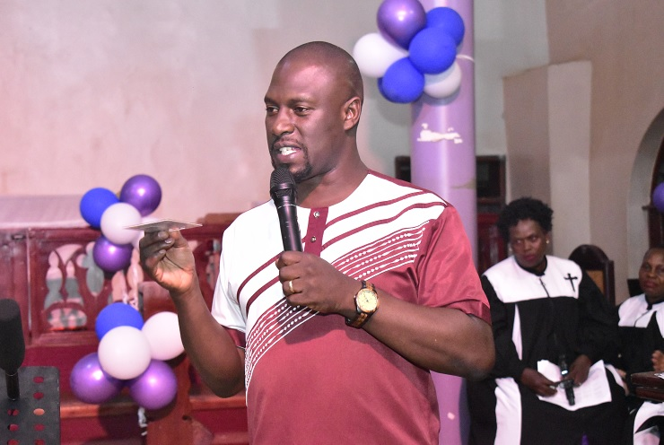

Bethel Choir Hymnal Concert 2026 delivers soul-stirring worship, nostalgia and pure gospel magic

If there was ever proof that gospel music can heal hearts, spark nostalgia and still feel like premium entertainment, then Hymnal Concert 2026 was exactly that.
Held at St. Stephen's Kasangati Church of Uganda, the much-anticipated annual concert organized by the beloved Bethel Choir lived up to every bit of its hype.
From the very first hymn, the atmosphere inside the church transformed into a powerful blend of worship, emotion and musical excellence. The timeless hymns transported congregants back to their childhoods, reviving memories of Sunday services, family prayers and the comforting sound of gospel classics that have stood the test of time.
A Full Vocal Showcase
This was not just another church concert. Choir after choir stepped onto the stage with polished harmonies, graceful choreography and elegant dress code that reflected reverence and devotion.
The lineup featured powerhouse performances from Echoes of Christ Choir, Heavenly Voices Choir, Bishops Choir, Father’s Union Choir, Friends of Bethel Choir and guest performers Gabriel Ministries Choir.

Their electrifying performance sent waves through the congregation, leaving many yearning for 'just one more song'.— Guest Spotlight: Gabriel Ministries Choir
Throughout the concert, worshippers swayed, sang along and soaked in every lyric as the hymns touched hearts and strengthened faith. Song after song, the audience responded with smiles, raised hands and emotional reflection, proof that gospel music still carries unmatched power when delivered with passion and authenticity.

We celebrate church tradition through the beauty of classical worship that has strengthened faith across generations.— Ssalongo Disan Ssemaganda, Bethel Choir Founder
Beyond the music and entertainment, the concert also served as a celebration of church tradition. The hymns, deeply rooted in the Hymn Book, reminded believers of the enduring beauty of classical worship.
One thing was clear by the end of the night: Hymnal Concert is no longer just a church event — it is becoming one of the most treasured gospel experiences on the Christian entertainment calendar.
Eagerly counting down to Hymnal Concert 2027!